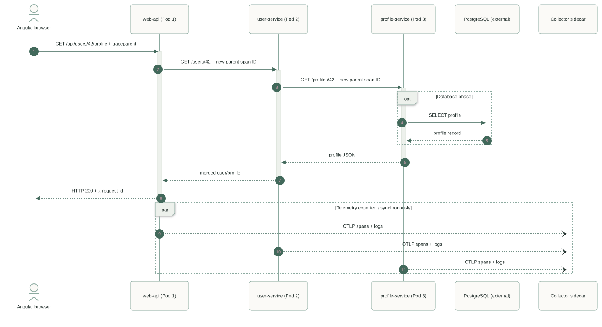
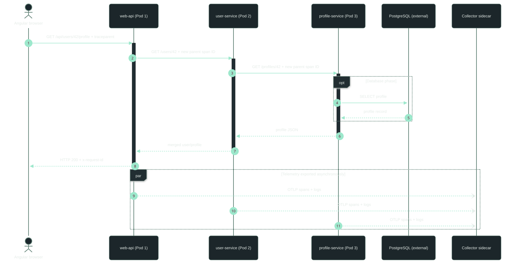

SYSTEM DESIGN / EKS OBSERVABILITY
PROJECT GITHUB REPOSITORYA profile page is slow. Follow its request across three services, find the operation that held it up, then use logs to understand whether the failure is recurring.
This is a reference implementation blueprint—not a deployed-system report. The architecture and examples follow the full project documentation. Semantic search is an optional extension.
One node, three application pods
The lab uses one EC2 worker node in EKS. web-api serves Angular and the Node.js API; user-service handles user details; profile-service loads the profile. Kubernetes system pods are separate from these three application pods.
The OpenTelemetry Collector is a sidecar in the web-api pod. Tempo, Loki, Elasticsearch, Grafana and Kibana live outside the three application pods, as does optional PostgreSQL. Begin with mock data; add the database after tracing and logging work.


Diagram labels use 12px text. On a narrow screen, scroll inside a diagram rather than shrinking its text.
Follow the request, then its telemetry
The browser calls /api/users/:id/profile. The API calls user-service, which calls profile-service. Start with backend tracing; browser instrumentation can come later.


HTTP instrumentation propagates W3C trace context: the trace ID stays the same while the parent span changes at each hop. Tempo assembles the spans into a timeline. The Collector is not a proxy in the business request path.
Automatic instrumentation covers HTTP and database calls. Add business spans named api.loadProfile, user.getDetails and profile.load to explain the work between them. Keep names stable—never put a user ID in a span name.
Instrument each Node.js service
Preload a CommonJS bootstrap before Express, Pino or the database client. Pin compatible OpenTelemetry packages and validate them together. This example exports traces and logs; it does not configure a metrics reader.
// instrumentation.cjs — illustrative Node.js entrypoint
const { NodeSDK } = require('@opentelemetry/sdk-node');
const { getNodeAutoInstrumentations } = require('@opentelemetry/auto-instrumentations-node');
const { OTLPTraceExporter } = require('@opentelemetry/exporter-trace-otlp-http');
const { OTLPLogExporter } = require('@opentelemetry/exporter-logs-otlp-http');
const { BatchLogRecordProcessor } = require('@opentelemetry/sdk-logs');
const base = process.env.OTEL_EXPORTER_OTLP_ENDPOINT;
const sdk = new NodeSDK({
traceExporter: new OTLPTraceExporter({ url: `${base}/v1/traces` }),
logRecordProcessors: [
new BatchLogRecordProcessor(
new OTLPLogExporter({ url: `${base}/v1/logs` })
)
],
instrumentations: [getNodeAutoInstrumentations()],
});
sdk.start();
process.on('SIGTERM', () => {
sdk.shutdown().finally(() => process.exit(0));
});node --require ./instrumentation.cjs server.cjsSet OTEL_SERVICE_NAME independently for each service. Supply service.version and deployment.environment.name through OTEL_RESOURCE_ATTRIBUTES to connect failures to releases. The shutdown handler is illustrative; the application also needs bounded request draining and telemetry flushing.
Log within the business operation
Pino instrumentation can attach active trace/span IDs and forward records through the configured log SDK. Choose this OTLP path or stdout collection, not both for the same records. Verify correlation and forwarding: adding a trace ID alone does not export a log.
import { trace, SpanStatusCode } from '@opentelemetry/api';
import pino from 'pino';
const tracer = trace.getTracer('profile-service');
const logger = pino();
export async function loadProfile(id: string) {
return tracer.startActiveSpan('profile.load', async (span) => {
try {
return await repository.getProfile(id); // pg span in DB phase
} catch (err) {
const code = isDatabaseTimeout(err)
? 'PROFILE_DB_TIMEOUT'
: 'PROFILE_LOAD_FAILED';
const error = err instanceof Error ? err : new Error('Unknown failure');
span.recordException(error);
span.setStatus({ code: SpanStatusCode.ERROR });
span.setAttribute('app.error.code', code);
logger.error({
'app.error.code': code,
'app.error.fingerprint': `profile.load:${code}`,
'app.operation': 'profile.load',
'exception.type': error.name
}, 'Profile operation failed');
throw err;
} finally {
span.end();
}
});
}repository and isDatabaseTimeout are application-specific placeholders. Stable error codes and fingerprints group equivalent failures. Review exception messages and stack traces for sensitive data before export; exclude request bodies, tokens and raw customer identifiers.
Connect the pods to one Collector
The API uses its sidecar at http://127.0.0.1:4318. The other pods use http://otel-collector.demo.svc.cluster.local:4318. The web-facing and Collector Services select Pod 1 but expose different ports: application traffic on 8080 and OTLP/HTTP on 4318.
apiVersion: v1
kind: Service
metadata:
name: otel-collector
namespace: demo
spec:
selector:
app: web-api
ports:
- name: otlp-http
port: 4318
targetPort: otlp-httpDeclare the Collector container's named port otlp-http at 4318 and match the selector to web-api's pod labels. Replacing Pod 1 interrupts telemetry intake from the other pods too. Test retry and bounded buffering during that interruption.


# OpenTelemetry Collector Contrib, development lab
# Pin and validate the Collector Contrib release before deploying.
receivers:
otlp:
protocols:
grpc:
endpoint: 0.0.0.0:4317
http:
endpoint: 0.0.0.0:4318
processors:
memory_limiter:
check_interval: 1s
limit_mib: 256
spike_limit_mib: 64
batch:
timeout: 5s
exporters:
otlp/tempo:
endpoint: ${env:TEMPO_OTLP_GRPC_ENDPOINT}
tls:
insecure: true # DEVELOPMENT ONLY; TLS required otherwise
otlphttp/loki:
endpoint: ${env:LOKI_OTLP_BASE_URL} # e.g. http://loki:3100/otlp
elasticsearch:
endpoint: ${env:ELASTICSEARCH_ENDPOINT}
api_key: ${env:ELASTIC_API_KEY} # encoded API key, pass via Secret
service:
pipelines:
traces:
receivers: [otlp]
processors: [memory_limiter, batch]
exporters: [otlp/tempo]
logs:
receivers: [otlp]
processors: [memory_limiter, batch]
exporters: [otlphttp/loki, elasticsearch]This is a Collector Contrib development configuration. Pin its release and validate exporters before deployment. Use Secrets, TLS outside the local lab, resource limits and restricted network access. Loki's base URL ends in /otlp; the HTTP exporter appends /v1/logs. Keep trace IDs as structured metadata, not high-cardinality Loki index labels.
Grafana connects logs and traces through their shared trace ID. Kibana provides Elasticsearch investigation. This is OTel-native Elasticsearch export, not a full Elastic APM gateway deployment.
Build in small, verifiable steps
- Make the request work. Run three services with mock data and verify the response path before telemetry.
- Connect the trace. Confirm one trace ID across services, correct parent-child relationships and useful business spans.
- Connect the logs. Produce a controlled failure and find its correlated record in Loki. Check for duplicate ingestion.
- Investigate in Elasticsearch. Inspect mappings, run the next tab's searches and compare releases using request-normalized counts.
- Add PostgreSQL, then harden. Verify database spans and timeout failures. Exercise Collector/backend outages, recovery, redaction, bounded queues and graceful shutdown.


These examples have not been run against a live telemetry backend. Production rates and alerting need suitable unsampled metrics; this blueprint does not add a Prometheus stack inside the application pods.
Use Elasticsearch to find the pattern
A trace explains one request. Elasticsearch helps answer what repeats: which service fails, which errors share a cause, and whether a release changes the failure rate. Start with structured fields; use semantic search later for related human-written knowledge.
The essentials, in practical terms
- Document: one searchable JSON record—here, one log event. A request can emit several events, so event counts are not request counts.
- Index and data stream: an index stores documents; a data stream groups backing indices for time-series ingestion and rollover. This blueprint queries
logs-*.otel-*. Retention determines how much history stays searchable. - Mapping: types determine search behavior. Keywords suit exact codes and IDs; text fields suit analyzed words; dates and numbers support time windows and arithmetic. Flattened attributes hold flexible key-value data. Inspect the real mapping first.
- Search: text search matches indexed terms; semantic search compares meaning using inference. Neither replaces an exact trace-ID lookup. Newly ingested records become searchable after refresh, not necessarily immediately.
- Shards and replicas: shards divide an index; replicas provide copies for availability and reads. These belong to the external Elasticsearch deployment, not extra application pods.
Check the stored shape first
In Kibana Dev Tools, inspect mappings and a recent document. Expect @timestamp, severity_text, trace_id, resource.attributes and attributes, but verify what your pinned exporter writes.
GET logs-*.otel-*/_mapping
GET logs-*.otel-*/_search
{
"size": 1,
"sort": [{ "@timestamp": "desc" }]
}These package ES|QL examples target its Elasticsearch 9.5+ flattened-field support. FIELD_EXTRACT returns keyword values; cast before arithmetic. Earlier releases or different mappings need explicit mapped fields or adapted queries. Apply a bounded time window to every investigation, using an additional WHERE @timestamp >= NOW() - 24 hours where needed. See Elastic's flattened-field guidance.
Five questions to ask during an incident
1. When did errors start, and in which service?
Count error events in five-minute buckets. This is an event trend, not a request failure percentage.
FROM logs-*.otel-*
| WHERE @timestamp >= NOW() - 24 hours
| WHERE severity_text == "ERROR"
| EVAL service = FIELD_EXTRACT(resource.attributes, "service.name")
| STATS error_events = COUNT(*) BY service, bucket = BUCKET(@timestamp, 5 minutes)
| SORT bucket ASCRead the spike: at 10:15, profile-service records 24 error events while the upstream services also rise. Start there, then use fingerprints and trace IDs to test whether these failures are related. The chart suggests where to investigate; it does not prove the root cause.
Plot the query result: use bucket for the horizontal time axis, error_events for the vertical count, and service for separate lines in your Kibana visualization. Keep the same five-minute interval and time window when comparing services.
2. Are these many failures or one repeating failure?
Group by stable code and fingerprint. Investigate the largest group first; avoid raw messages with constantly changing values.
FROM logs-*.otel-*
| WHERE severity_text == "ERROR"
| EVAL service = FIELD_EXTRACT(resource.attributes, "service.name"),
fingerprint = FIELD_EXTRACT(attributes, "app.error.fingerprint"),
code = FIELD_EXTRACT(attributes, "app.error.code")
| STATS occurrences = COUNT(*) BY service, fingerprint, code
| SORT occurrences DESC3. Did the failure appear with a deployment?
Compare error groups across service versions. More events alone do not prove a regression: traffic and observation windows must be comparable.
FROM logs-*.otel-*
| WHERE severity_text == "ERROR"
| EVAL service = FIELD_EXTRACT(resource.attributes, "service.name"),
version = FIELD_EXTRACT(resource.attributes, "service.version"),
code = FIELD_EXTRACT(attributes, "app.error.code")
| WHERE service == "profile-service"
| STATS error_events = COUNT(*) BY version, code
| SORT error_events DESC4. What proportion of API requests failed?
Emit exactly one unsampled completion event per web-api request, including successes, with a valid HTTP status. Missing, duplicated or sampled events invalidate the denominator.
FROM logs-*.otel-*
| EVAL service = FIELD_EXTRACT(resource.attributes, "service.name"),
version = FIELD_EXTRACT(resource.attributes, "service.version"),
event_type = FIELD_EXTRACT(attributes, "app.event"),
status = TO_LONG(FIELD_EXTRACT(attributes, "app.http.status_code"))
| WHERE service == "web-api" AND event_type == "http.request.completed"
| EVAL is_5xx = CASE(status >= 500, 1, 0)
| STATS requests = COUNT(*), failed = SUM(is_5xx) BY version
| EVAL error_rate_pct = ROUND(100.0 * failed / requests, 2)
| SORT versionThis measures the 5xx share of recorded API completions, not business correctness or latency. Validate event coverage before relying on this percentage.
5. What happened inside this request?
Replace the example trace ID with one from a failed request. Read logs in time order, then open that ID in Tempo for the span timeline.
FROM logs-*.otel-*
| WHERE trace_id == "4bf92f3577b34da6a3ce929d0e0e4736"
| SORT @timestamp ASCSemantic search: find the explanation, not just the ID
Optional extension to the supplied blueprint. Someone may search “profile page hangs waiting for the database” while a runbook says “connection pool exhaustion.” Semantic retrieval can find related notes despite different wording. Keep exact IDs, error codes and service filters for precise investigation.
Use a separate, curated corpus of redacted incident summaries and runbooks. Do not automatically embed raw production logs or customer data. Review model hosting, permissions, licensing and inference costs first.
1. Configure inference, then create the mapping
The example assumes an available inference endpoint named incident-embeddings; replace it with your configured endpoint. This snippet does not create it. Confirm your Elasticsearch version supports semantic_text and your chosen model.
PUT incident-notes
{
"mappings": {
"properties": {
"service": { "type": "keyword" },
"error_code": { "type": "keyword" },
"title": { "type": "text" },
"summary": {
"type": "semantic_text",
"inference_id": "incident-embeddings"
}
}
}
}2. Index a useful, reviewed explanation
PUT incident-notes/_doc/profile-timeout
{
"service": "profile-service",
"error_code": "PROFILE_DB_TIMEOUT",
"title": "Database pool exhaustion",
"summary": "Profile requests timed out waiting for a database connection. Check pool wait time and concurrent requests before changing timeouts."
}3. Search in everyday language, within the right service
POST incident-notes/_search
{
"size": 5,
"query": {
"bool": {
"filter": [
{ "term": { "service": "profile-service" } }
],
"must": [
{ "match": { "summary": "profile page hangs waiting for the database" } }
]
}
}
}A match query on semantic_text performs semantic retrieval; the keyword filter restricts results to the service. Results are candidate explanations, not diagnoses. Validate them against current traces and logs. See the official semantic search implementation guide.
Evaluate using real investigation questions and reviewed relevant notes. Compare keyword and semantic results; consider hybrid ranking if each finds useful material the other misses. Check sensitive-data exclusions and visible failure when inference is unavailable. No model, index or backend was provisioned for this article.